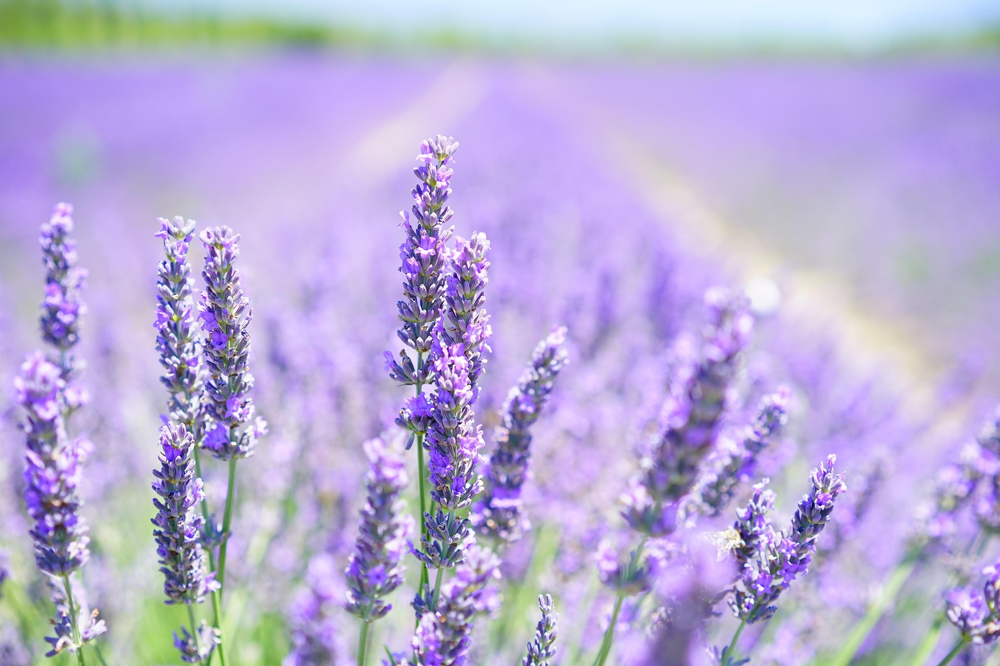
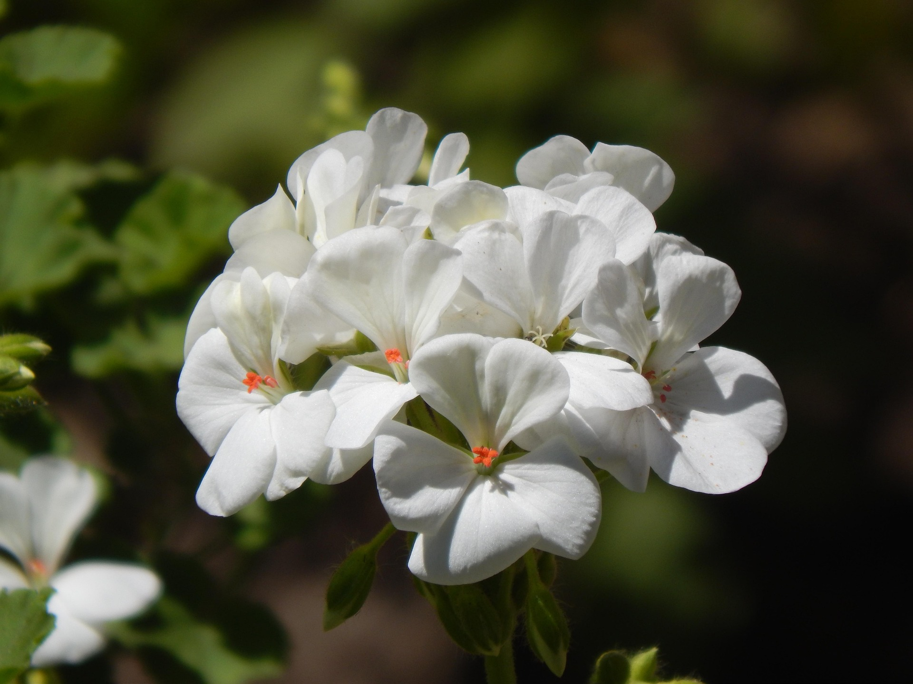

Cultivo, cuidado y observación
Un jardín para compartir despacio.
Una selección de plantas que cultivo en casa, organizada para que encuentres cada especie y consultes su ficha de información.
Dos ambientes, una misma dedicación
Elegí dónde empieza tu recorrido
Colección 01
Plantas de interior
Especies que encuentran su lugar dentro de casa y convierten la luz cotidiana en compañía.


Colección 02
Plantas de exterior
Flores, perfume y color para acompañar los cambios del clima y las estaciones.



La persona detrás del jardín
Juan Segobia
Este sitio nace de dos intereses que crecen en paralelo: aprender a crear soluciones digitales claras y cuidar las plantas que forman parte de mi casa.
Soy estudiante de Analista Programador Universitario y de Ciencia de Datos en Organizaciones. Mantengo este pequeño catálogo para registrar lo que cultivo y compartir información útil.
ProyectoMi jardín, catálogo estático de plantas
InteresesProgramación, datos y cultivo hogareño
Una conversación siempre puede empezar
Contacto
Completá el formulario y dejame tu consulta sobre el jardín.
Criterio visual
Formas simples, información clara
Las fichas usan borde sólido de 1px, esquinas de 12px y relleno cálido marfil. El verde musgo señala acciones y estados sin depender solo del color.